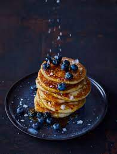

Blåbärspannkaka

God och spännande variant av den klassiska pannkakan.
Blåbärspannkaka är ett mättande och uppskattat alternativ till
lunch, middag eller kanske som mellanmål. Servera blåbärspannkakan
med en klick vaniljglass.
Ingredienser
- 3 ägg
- 6 dl mjölk
- 2 1/2 dl vetemjöl
- 1 msk socker
- 1/2 tsk salt
- 300 g djupfrysta blåbär
- 1/2 dl florsocker
Gör så här
Sätt ugnen på 200°C.
Vispa ihop äggen och hälften av mjölken. Tillsätt mjölet och vispa
till en klimpfri smet. Häll i resten av mjölken och tillsätt socker
och salt. Häll smeten i en lätt smord långpanna, ca 30x40 cm (för 4
port). Strö på blåbären. Grädda i ca 25 min. Pudra över florsockret
och servera blåbärspannkakan skuren i bitar med en klick
vaniljglass.
For more inforamtion contact us: